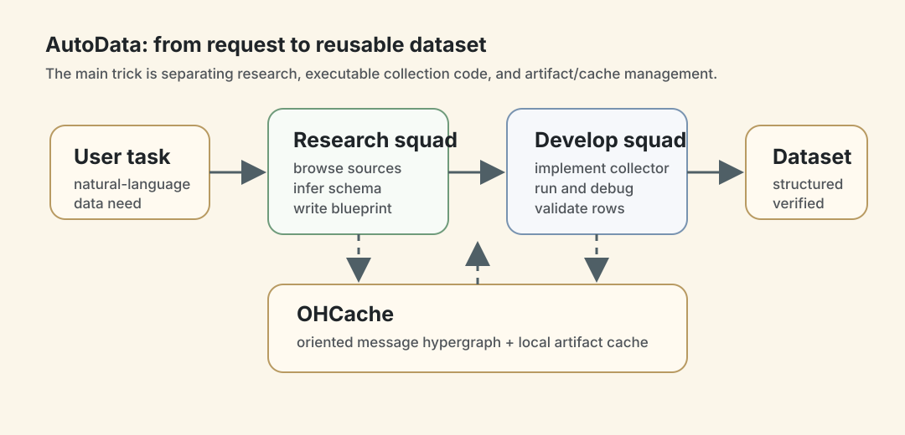
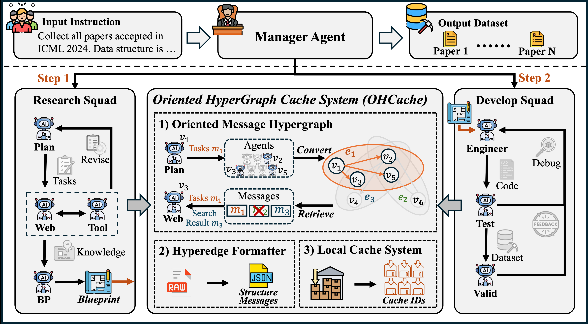
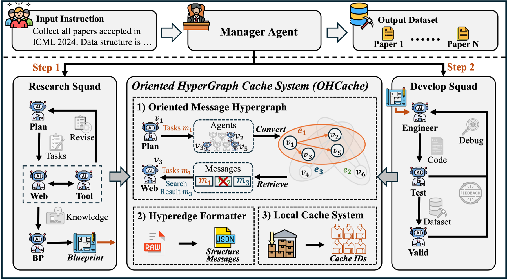
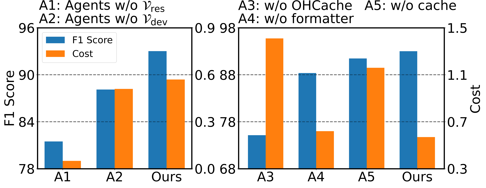
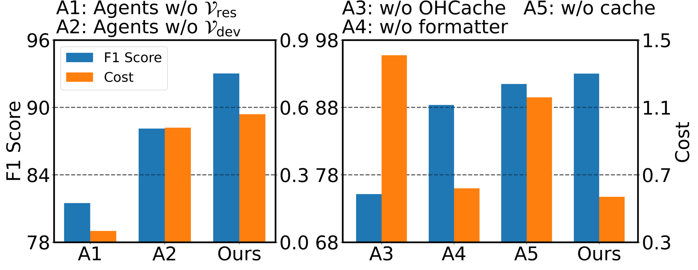

AutoData：把一句数据需求变成可执行采集程序
- Paper: AutoData: A Multi-Agent System for Open Web Data Collection
- Version: arXiv v1, 2025-05-21
- 类型: multi-agent system / web data collection / benchmark paper
- 关键词: AutoData, Instruct2DS, OHCache, oriented message hypergraph, research squad, development squad
读法：给人和 agent 的路标
这篇适合按 数据工程 agent 系统 来读，而不是按普通 web scraping paper 读。它关心的是：用户只给一句自然语言数据需求，系统能不能自己研究网站/API、整理 blueprint、写采集代码、执行、验证、产出 dataset。
给 agent 之后检索，关键词是：AutoData、Instruct2DS、open web data collection、oriented hypergraph cache、research squad、development squad、OHCache、BibTeX from survey case study。
一句话判断
AutoData 的核心贡献是把 open web data collection 做成一个多智能体工程流程：研究 squad 负责理解 web/API 和生成 blueprint，开发 squad 负责写程序、执行、验证，OHCache 用 oriented hypergraph 管理跨 agent 信息流。它在 Instruct2DS 上用 5.58 分钟 / 0.57 美元 达到 Academic/Stock/Sport F1 91.85 / 96.75 / 90.14，比 Manus 更快更便宜。
图表优先读法
| 先看 | 图/表 | 读完应该抓住什么 |
|---|---|---|
| 1 | Figure 1：官方整体框架 | Research squad、Develop squad 和 OHCache 怎么接成闭环 |
| 2 | OHCache 结构 | 为什么多 agent 数据工程需要 message hypergraph 和 local cache |
| 3 | Table 1 | Instruct2DS 上 F1、时间、成本是否真的同时更好 |
| 4 | Figure 3 | 去掉 squad / OHCache / formatter / local cache 后到底损失什么 |
| 5 | Table 5 | 从 survey 抽 BibTeX 这个 case 对 paper-reading pipeline 最有迁移价值 |

这张自制图把 AutoData 的主线压成一条工程闭环：自然语言需求先进入 Research squad 形成 blueprint，再由 Develop squad 写程序和验证数据；OHCache 在底层托住跨 agent 消息和大 artifact。这样看官方 Figure 1 时，不会只看到“多 agent 很热闹”，而能抓住它把数据工程拆成研究阶段和开发阶段的设计。
先看系统框架


Figure 1 是这篇最重要的图。AutoData 的整体流程是：
- 用户输入一句自然语言数据需求。
- Research squad 浏览网页、理解数据源、抽取采集逻辑，生成 development blueprint。
- Development squad 根据 blueprint 写采集程序、执行程序、验证数据。
- Manager agent 编排 agent 顺序和信息流。
- OHCache 把消息、artifact 和多接收者通信组织成 oriented message hypergraph。
这个架构最有意思的地方不是“agent 很多”，而是它把真实数据采集拆成了两个阶段：先研究采集逻辑，再写可复用程序。这比让一个 agent 边搜边抓边写更像正常的数据工程流程。
OHCache：为什么要用 oriented hypergraph
普通 multi-agent 系统常用 broadcast：每个 agent 都看到大量历史消息和 artifact。对 web data collection 这种任务，这会带来两个问题：
- token 成本高，尤其网页内容、HTML、API 文档、转换文件会很大；
- 后续 agent 需要的是特定 artifact，不是所有历史聊天。
AutoData 的 OHCache 包含三部分：
| 组件 | 做什么 | 价值 |
|---|---|---|
| Oriented message hypergraph | 用有向超边表示一个消息从一个 source agent 发给多个 target agents | 避免全局广播 |
| Hyperedge formatter | 把自然语言消息结构化，再写入 hypergraph | 降低歧义，便于后续检索 |
| Local cache system | 大文件和可复用 artifact 存本地，只在消息里传 cache id | 降低 token 和重复传输成本 |
用一句话说：OHCache 是让多 agent 协作更像工作流系统，而不是把所有东西塞进一个聊天上下文。
Instruct2DS：它测的不是静态网页抽取
论文提出 Instruct2DS，目标是评估 agent 从开放 web source 采集 live dataset 的能力。它覆盖三个域：
- Academic：会议论文数据，例如 NeurIPS/ICLR/ICML/ACL/EMNLP/NAACL/CVPR/ICCV/ECCV；
- Finance：股票数据；
- Sports：NBA/MLB 相关统计。
Appendix D.4 提到评测集包含 234 unique tasks。模型只拿到自然语言 instruction，不能直接访问作者构造的 ground-truth database，必须自己去开放 web source 抓取。
这点和 SWDE/Extended SWDE 不一样：后者更多是静态页面 IE，Instruct2DS 要求 agent 处理 live web、instruction variables、symbolic-style extraction 和数据完整性。
主结果：Instruct2DS
Table 1 的关键数字：
| Method | Academic F1 | Stock F1 | Sport F1 | Time min | Cost USD |
|---|---|---|---|---|---|
| Human | 85.57 | 91.66 | 89.50 | 186.98 | N/A |
| Cursor | 84.37 | 90.23 | 88.70 | 71.60 | N/A |
| Manus | 69.27 | 95.24 | 87.48 | 15.37 | 2.49 |
| AutoData | 91.85 | 96.75 | 90.14 | 5.58 | 0.57 |
这个表的读法：
- Manus 在 Stock 上已经很强，但 Academic 明显弱。
- 人和 Cursor 的准确率不错，但时间成本太高。
- AutoData 的优势来自“系统化 workflow + 专门面向数据采集”，不是单纯换一个更强模型。
其他 benchmark 和 case
SWDE / Extended SWDE
Table 2 显示 AutoData 在传统 IE benchmark 上也有竞争力：
| Dataset | AutoData F1 | 对比 |
|---|---|---|
| SWDE | 89.25 | Manus 89.22，AutoScraper 88.69 |
| Extended SWDE | 77.44 | AutoScraper 76.21，Manus 75.64 |
这些提升不算巨大，但说明系统没有只 overfit Instruct2DS。
HumanEval
因为系统里有 code generation 机制，作者还测了 HumanEval：
| Method | Pass@1 |
|---|---|
| GPT-4 | 67.0 |
| MetaGPT | 85.9 |
| Ours + GPT-4 | 86.9 |
| GPT-4o | 90.2 |
| Ours + GPT-4o | 92.5 |
这个实验不能证明 AutoData 是通用 coding agent，但说明它的研究-开发拆分没有拖累代码生成，甚至能提升一点。
Case 1：儿童绘本数据采集
Table 4 对比 Manus：
| Method | Acc | Completeness | Uniqueness error | Cost |
|---|---|---|---|---|
| Manus | 63.93 | 79.76 | 1.51 | 1.86 |
| AutoData | 89.58 | 98.13 | 0.00 | 0.91 |
这是一个多层 HTML crawl 任务，说明 AutoData 不只适合模板化 benchmark。
Case 2：从 survey 里抓 BibTeX
Table 5：
| Method | F1 | Precision | Recall | Cost |
|---|---|---|---|---|
| Manus | 74.70 | 87.96 | 61.52 | 2.55 |
| AutoData | 91.16 | 94.28 | 88.46 | 1.40 |
这个 case 对我特别有用：它接近 paper-reading pipeline 里的“从综述抽取参考文献、建立阅读地图”的场景。
Ablation：系统组件不是装饰


Figure 3 做了两类 ablation：
- 去掉 research squad 或 development squad 的部分能力，性能下降；
- 去掉 OHCache、formatter 或 local cache，性能/成本变差。
论文特别指出，去掉 local cache 后性能变化可能不大，但成本会显著升高。这符合直觉：artifact 传输和长上下文重复读取在多 agent 系统里很容易变成隐形成本。
我怎么判断
可信之处
- 问题定义很实际：从 natural language instruction 到 dataset，是很多研究和业务场景真实需要的能力。
- 有 benchmark 也有 case study：Instruct2DS、SWDE、HumanEval、绘本、survey BibTeX 覆盖了不同难度。
- 成本意识明确：论文持续报告 time 和 expense，不只看 F1。
- OHCache 是真实系统痛点：多 agent token 成本和 artifact 传递不是小问题。
需要警惕
- live web 复现会变：网站结构、rate limit、API pricing、反爬策略都会影响结果。
- 评测任务仍偏结构化采集：对登录态、强反爬、动态交互、法律合规更复杂的场景没有充分覆盖。
- 依赖 LLM API 质量和价格：Appendix G 也承认 pricing、rate limit、model quality 一变，latency/reproducibility/cost 都会变。
- dual-use 风险明显：自动采集系统可能抓个人数据、版权内容、付费内容或用于恶意数据构建。
对我的价值
这篇对个人 wiki/paper-reading pipeline 有两个直接启发：
- 研究和开发要拆开：先让 agent 研究数据源和输出 blueprint，再让另一个 agent 写抓取/转换脚本。
- artifact 不要全塞聊天历史：HTML、PDF、CSV、图片、解析中间结果应该放 cache，消息里传 id 和摘要。
- 采集结果要有 final-state/evidence 验证：不是 agent 说“抓完了”，而是和 schema、样本数、字段完整性、去重规则对齐。
如果以后做“从综述自动生成 paper reading seed map”，AutoData 的 BibTeX case 可以直接当参考：先抽引用，再交叉验证，再生成 structured dataset。
一句话收束
AutoData 的好处是把 web 数据采集从一次性聊天任务变成了一个可缓存、可验证、可复用的 agent workflow。这比“叫一个大模型帮我爬一下”靠谱得多。